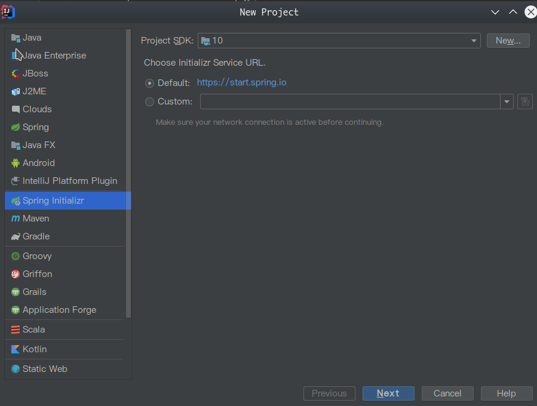
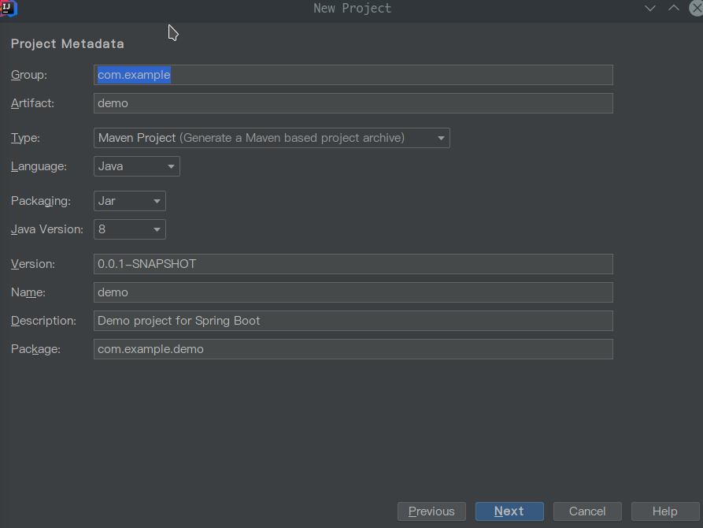
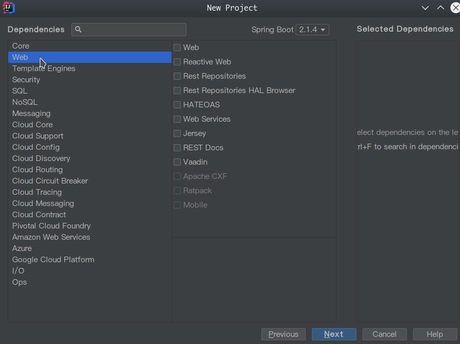

需要IDEA,jdk8以上
创建项目
SpringBoot需要IDEA Ultimate,新建项目，选择Spring Initializer

Next

选择Web

Next ,输入项目名，完成，等待依赖自动下载。
配置热更新
在
pom.xml中添加依赖<!-- devtools可以实现页面热部署（即页面修改后会立即生效，Screenshot_20190513_132212.png
这个可以直接在application.properties文件中配置spring.thymeleaf.cache=false来实现） -->
<!-- 实现类文件热部署（类文件修改后不会立即生效），实现对属性文件的热部署。 -->
<!-- 即devtools会监听classpath下的文件变动，并且会立即重启应用（发生在保存时机）
注意：因为其采用的虚拟机机制，该项重启是很快的 -->
<!-- （1）base classloader （Base类加载器）：加载不改变的Class，例如：第三方提供的jar包。 -->
<!-- （2）restart classloader（Restart类加载器）：加载正在开发的Class。 -->
<!-- 为什么重启很快，因为重启的时候只是加载了在开发的Class，没有重新加载第三方的jar包。 -->
<dependency>
<groupId>org.springframework.boot</groupId>
<artifactId>spring-boot-devtools</artifactId>
<!-- optional=true, 依赖不会传递, 该项目依赖devtools;
之后依赖boot项目的项目如果想要使用devtools, 需要重新引入 -->
<optional>true</optional>
</dependency>修改
application.properties文件#"关闭缓存, 即时刷新"
#spring.freemarker.cache=false
#spring.thymeleaf.cache=true 如果开启此处会导致每次输入删除都会自动刷新哪怕你没保存
#热部署生效
spring.devtools.restart.enabled=true
#设置重启的目录
spring.devtools.restart.additional-paths=src/main/java
spring.devtools.restart.exclude=WEB-INF/**idea的修改
File-Settings-Compiler-Build Project automatically，勾选Build Project automatically,确认然后ctrl + shift + alt + / ,选择Registry,勾上 Compiler.autoMake.allow.when.app.running
此时，修改 src/main/java下的代码，Ctrl + S 保存，发现会重新编译。
修改启动端口
application.properties中加入server.port=8080
MySQL Jdbc
pom.xml:<dependency>
<groupId>mysql</groupId>
<artifactId>mysql-connector-java</artifactId>
</dependency>
<dependency>
<groupId>org.springframework.boot</groupId>
<artifactId>spring-boot-starter-jdbc</artifactId>
</dependency>
application.propertiesspring.datasource.url=jdbc:mysql://localhost:3306/test?useUnicode=true&zeroDateTimeBehavior=convertToNull&autoReconnect=true
spring.datasource.username=
spring.datasource.password=
spring.datasource.driver-class-name=com.mysql.cj.jdbc.Driver
SQL:create database test;
use test;
create table user (name varchar(30),password varchar(50));
insert into user values("user","pwd");
Java:import org.springframework.beans.factory.annotation.Autowired;
import org.springframework.jdbc.core.JdbcTemplate;
import org.springframework.web.bind.annotation.*;
public class DemoController {
private JdbcTemplate jdbcTemplate;
public Map sqlDemo() {
String sql="insert into user (name,password) values (?,?)";
int count= jdbcTemplate.update(sql, new Object[]{"user001","password001"});
return new HashMap();
}
}
Rest Api例子
创建一个Controller例子，LoginController.javaimport org.springframework.web.bind.annotation.*;
import java.util.HashMap;
import java.util.Map;
public class LoginController {
public Map demo1() {
HashMap res = new HashMap();
res.put("msg","hello");
return res;
}
public Map demo2( Map req) {
String data = (String)req.get("data");
boolean ok = (boolean)req.get("ok");
Map res = new HashMap();
res.put("data",data);
res.put("ok",ok);
return res;
}
}
测试curl http://localhost:8080/user/register -H "Content-Type: application/json" -X POST -d '{"data":"hello","ok":true}'
{"data":"hello","get":true,"ok":true}
返回{"data":"hello","ok":true}